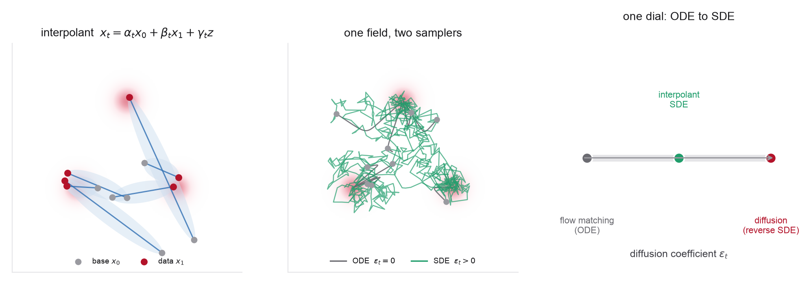

4.1Orientation
A stochastic interpolant joins a base sample and a data sample by a path that carries its own noise, \(x_t=\alpha_t x_0+\beta_t x_1+\gamma_t z\). From it you learn two fields, a velocity and a score, and those two fields generate not one sampler but a whole family indexed by a non-negative diffusion schedule \(\epsilon_t\), deterministic ODE at one end and noisy SDE at the other, all sharing the same time-marginals.

Week 3 ended on a deliberate loose end. Flow matching regressed a velocity onto a path you chose, and the straight line \(x_t=(1-t)x_0+t x_1\) was the simplest deterministic member of a large family of probability paths; the Gaussian path underlying diffusion was another, curved one. But two things were still fixed by hand. The interpolant was deterministic, a single line from \(x_0\) to \(x_1\), and the only object learned was a velocity. The stochastic interpolant framework of Albergo, Boffi, and Vanden-Eijnden relaxes the first and adds the second. It thickens the path with an independent latent \(z\sim\mathcal N(0,I)\), scaled by a coefficient \(\gamma_t\) that is zero at \(t=0\) and \(t=1\) so the endpoints are untouched, and it learns both the velocity \(b_t(x)=\mathbb E[\dot x_t\mid x_t=x]\) and the score \(s_t(x)=\nabla\log\rho_t(x)\) on the same path.
The reason to bother is the result that follows. Once you hold a velocity and a score for the same family of marginals \(\rho_t\), a short Fokker-Planck calculation shows that
transports \(\rho_0\) to \(\rho_1\) for every non-negative schedule \(\epsilon_t\). At \(\epsilon_t=0\) this is the probability-flow ODE and the deterministic flow-matching sampler of Week 3; at one particular \(\epsilon_t\) tied to a Gaussian schedule it is the reverse-time diffusion SDE of Week 2. Deterministic transport and noisy denoising are not two methods, they are two dials on one machine, and the interpolant is the machine. This is what "unifying language" means concretely: not a slogan, but a single pair of learned fields from which the ODE, the SDE, and everything in between fall out by choosing \(\epsilon_t\).
For molecules and materials the extra dial earns its keep. Scientific target distributions are rugged, multi-well Boltzmann densities, and a deterministic ODE gives one continuous trajectory per initial condition with no resampling term along the way. The stochastic term reintroduces noise and score-driven correction as sampling proceeds, which in practice can improve mode coverage and robustness to an imperfect learned field, at the cost of more function evaluations, so \(\epsilon_t\) becomes a quality-versus-cost knob you tune per system. The materials reading this week, Open Materials Generation, is built directly on this construction for the continuous crystal variables, using stochastic interpolants for fractional coordinates and lattice vectors alongside discrete flow matching for atom types, and choosing the sampler after training. The problems build the arc: derive the velocity and score, prove the sampler family shares its marginals, then train one interpolant and sweep \(\epsilon_t\) on a molecular energy surface and on a periodic materials coupling.
Where this sits. Weeks 2, 3, and 4 are three views of one estimator. Diffusion (Week 2) fixes a Gaussian noising process and learns a score. Flow matching (Week 3) chooses a deterministic path and learns a velocity. Stochastic interpolants (this week) choose a path with a latent noise term and learn both, then recover the other two as special cases and expose the ODE-to-SDE sampler family that connects them. Week 5 keeps the interpolant fixed and makes the coupling \((x_0,x_1)\sim\pi\) the design variable; Week 9 pushes the data-dependent coupling of this week to its endpoint, the Schrödinger bridge.
4.2Learning goals
- Define the stochastic interpolant \(x_t=\alpha_t x_0+\beta_t x_1+\gamma_t z\) with its boundary conditions, and show its marginal law \(\rho_t\) interpolates the base \(\rho_0\) and the data \(\rho_1\).
- Derive the velocity field \(b_t(x)=\mathbb E[\dot x_t\mid x_t=x]\), prove it satisfies the continuity equation for \(\rho_t\), and show the tractable per-sample regression has \(b_t\) as its minimizer, the same conditional-mean argument as denoising score matching and CFM.
- Derive the interior-time score identity \(s_t(x)=-\gamma_t^{-1}\mathbb E[z\mid x_t=x]\), valid wherever \(\gamma_t>0\), give the tractable objective that learns it, and write the linear velocity-score dictionary relating \(b_t\) and \(s_t\) on an affine path.
- Prove the central result: for any \(\epsilon_t\ge0\), the SDE \(\mathrm dX_t=[b_t+\epsilon_t s_t]\, \mathrm dt+\sqrt{2\epsilon_t}\,\mathrm dW_t\) has the same marginals \(\rho_t\), via a Fokker-Planck calculation, and identify \(\epsilon_t=0\) as the probability-flow ODE.
- Recover Week 3 flow matching as the \(\gamma_t=0\) deterministic interpolant, and Week 2 diffusion as the one-sided interpolant with a particular schedule and a particular \(\epsilon_t\); place the reverse-time SDE inside the family.
- Explain what a data-dependent coupling \(\pi(x_0,x_1)\) buys, when both endpoints are meaningful distributions (unrelaxed to relaxed structures, low- to high-fidelity), and how it previews optimal transport (Week 5) and Schrödinger bridges (Week 9).
- State why a tunable stochastic sampler matters for rugged molecular and materials Boltzmann targets, and how a stochastic-interpolant generator such as OMatG handles a multi-field crystal representation, interpolants for the continuous fields and discrete flow matching for the categorical ones.
4.3Methods readings
Read roughly in order. The two Albergo-Boffi-Vanden-Eijnden papers are the spine: the first builds normalizing flows from interpolants, the second is the unifying framework this week is named for and the one Problems 1 and 2 reproduce. Read the unifying paper for the interpolant definition, the velocity and score objectives, and above all the family of samplers that shares one set of marginals, the result that makes "flows and diffusions are one thing" precise. The data-dependent-couplings paper generalizes the endpoints from noise-to-data to any paired ensembles, the construction Problem 4 builds and Week 9 finishes. SiT is the controlled experiment: hold a transformer fixed, turn diffusion into an interpolant, a score into a velocity, and an ODE into a tunable SDE, and measure each step. The MIT notes and the Flow Matching Guide remain the notation anchors. Aim to see the velocity, the score, and the diffusion coefficient as three independent choices on one path, not as three methods.
The same notation source as Weeks 1-3. The relevant thread is the pairing of the probability-flow ODE and the reverse-time SDE for a shared family of marginals (the ODE/SDE material in §§2 and 4). Read the interpolant paper against this: the notes fix one Gaussian path and derive the ODE and SDE for it, and the stochastic-interpolant framework is the same statement made path-agnostic and symmetric in velocity and score.
The central reading of the week. Read §2, which carries the whole core: the interpolant and its marginal in §2.1, then the transport equations, the score, and the velocity and score square-loss objectives in §2.2, then the probability-flow ODE and the forward and backward SDEs that share the marginals in §2.3. Then read §4 (spatially linear interpolants), where the explicit \(x_t=\alpha_t x_0+\beta_t x_1+\gamma_t z\) form is worked out along with the impact of the latent \(\gamma_t z\) and the diffusion coefficient \(\epsilon_t\), and §5.1 for the explicit recovery of score-based diffusion. Problem 1 reproduces the velocity and transport equation; Problem 2 reproduces the score identity and the sampler family. This paper is the reason the week exists.
The first paper of the program and the gentlest entry point. It introduces the interpolant between two arbitrary densities and the velocity that transports one to the other, before the score and the SDE family enter. Read §2 for the construction and the quadratic objective; it is the deterministic skeleton that the unifying paper thickens with the latent \(\gamma_t z\). A good place to start if the full framework reads densely.
Generalizes the endpoints. Instead of an independent noise-to-data pairing, draw \((x_0,x_1)\) from a dependent coupling \(\pi\), so the interpolant becomes a stochastic bridge between two meaningful distributions. The paper demonstrates this on super-resolution and in-painting; carrying it over to one physical ensemble bridging to another is this course's extension, and is the reason to read it here. Read §3 for the coupled construction (§3.2) and the theorem (§3.1) under which the velocity and score objectives stay valid. Problem 4 builds a materials instance (unrelaxed to relaxed coordinates on the torus); Week 9 turns the same idea into the Schrödinger bridge.
The controlled evidence that the choices this week isolates actually matter. Holding the DiT backbone fixed, SiT ablates the recipe one hinge at a time: discrete to continuous time, a diffusion path to a linear interpolant, a score parameterization to a velocity, and a fixed sampler to a tunable SDE with a swept diffusion coefficient. Read §2 for the interpolant framing (the same construction as the framework paper) and §3 for the step-by-step ImageNet ablation: Tables 2-5 cover discrete-to-continuous time, parameterization, interpolant choice, and ODE-versus-SDE sampling, while §3.2 and Table 6 sweep the diffusion coefficient. Read the parameterization table carefully rather than assuming every move is a clean win, the weighted score model edges out velocity there, and the case for velocity is built on the interpolant and sampler axes instead. This is the direct sequel to the DiT/SiT reading previewed in Week 3.
Kept as the canonical notation and code reference. Its §10, "Relation to Diffusion and other Denoising Models," relates diffusion and denoising models to the flow-matching viewpoint, while §4.8.1, "Velocity parameterizations," gives the affine-path conversion formulas among velocity, source prediction, target prediction, and score, the same dictionary you use to convert velocity and score in Problem 2. Use it to keep signs and schedules consistent with Weeks 2-3 while reading the interpolant papers, which use their own conventions.
One path, three choices. Keep these separate while reading. (1) The interpolant coefficients \((\alpha_t,\beta_t,\gamma_t)\) fix the path and its latent width. (2) The learned target is a velocity and a score; on an affine path, away from the endpoint singularities and given the schedule, either determines the other through the dictionary \(b_t(x)=\dot\alpha_t\mathbb E[x_0\mid x_t{=}x]+\dot\beta_t\mathbb E[x_1\mid x_t{=}x]+\dot\gamma_t\mathbb E[z\mid x_t{=}x]\) with \(\mathbb E[z\mid x_t{=}x]=-\gamma_t s_t(x)\). (3) The diffusion coefficient \(\epsilon_t\ge0\) picks the sampler, from ODE to SDE, after training. Weeks 2 and 3 each froze two of these three; this week varies all three.
4.4Chemistry / materials application readings
The scientific readings do two things with the framework. First, they use the interpolant as the generative backbone for crystals, flowing the continuous fields (fractional coordinates on a torus, lattice vectors) with the interpolant, pairing it with discrete flow matching for the categorical atom types, and choosing the sampler afterward, the OMatG line. Second, they let you place the interpolant against the two dominant crystal generators, the diffusion model MatterGen and the flow-matching model CrystalFlow, and see them as three points in the design space this week draws. Carry one question throughout: given a rugged materials Boltzmann target, when does the stochastic sampler (\(\epsilon_t>0\)) buy better coverage and stability, and when is the deterministic ODE enough?
Why the extra noise can help for science. Deterministic ODE sampling is a bijection from base to data: each noise sample maps to exactly one structure, the trajectory is a single continuous path, and there is no term that resamples or pulls back toward high-density regions along the way. On a multi-well molecular or materials density that means mode coverage is tied rigidly to the base distribution, a deviation from the true field carries forward, and the flow can stiffen near sharp basins. A stochastic sampler with \(\epsilon_t>0\) reinjects noise and score-driven drift throughout, adding a Langevin-like pull toward high-density regions that can improve mixing and blunt the effect of an imperfect learned field, at the price of more steps. Whether it does is an empirical question per system, and the interpolant is what lets you settle it after training rather than committing to an answer in the loss.
The direct materials reading, and a stochastic-interpolant crystal generator built on this week's framework. Read for the crystal representation (fractional coordinates on the flat torus, lattice parameters, and categorical atom types), for the way stochastic interpolants carry the continuous fields while discrete flow matching carries the atomic species, and for the de novo and crystal-structure-prediction results. Note how it uses the ODE/SDE freedom and how it handles the periodic coordinate space, the same torus geometry as Week 3's FlowMM lab. Problem 4's coupling lab is a coordinate-only miniature of this model; Week 11 is crystals in full.
The high-profile crystal diffusion model, and the natural contrast. It runs a joint diffusion over coordinates, lattice, and atom types with property-conditioned fine-tuning. Read its representation and conditional-generation sections, and place it in the interpolant design space: MatterGen is (roughly) the denoising corner, a fixed noising schedule with a fixed reverse SDE, that this week generalizes. "Score" is the literal object for the continuous fields; the categorical atom types are denoised, not scored, which is worth noticing before you push the analogy too far. A Week 8 and Week 11 reference; read it here for the comparison, not in full.
The flow-matching crystal generator, the deterministic-path corner of the same design space: continuous normalizing flows trained with conditional flow matching over lattice parameters, atomic coordinates, and, depending on the task, atom types. Read the representation and conditional-generation sections and compare directly with OMatG: broadly overlapping crystal fields, a velocity-only deterministic objective instead of the velocity-plus-score interpolant. Reading OMatG, CrystalFlow, and MatterGen together is the cleanest way to see the three learned targets, velocity, score, and both, as one axis of choice. A Week 11 topic in full.
Carried over from Week 3 as the molecular Boltzmann-generator anchor. Reread it here with the stochastic sampler in mind: the target is an explicit Boltzmann density over molecular configurations, exactly the rugged multi-well case where the ODE-versus-SDE trade of Problem 3 is sharpest. It motivates why a tunable stochastic sampler is attractive for sampling equilibrium ensembles, and connects to the reweighting and Boltzmann-generator theme of Week 10.
4.5Problems
Four problems, each on its own page with full statements. Two derivations build the framework, the velocity and transport equation, then the score and the sampler family that unifies flows and diffusions, followed by two coding labs: one interpolant sampled across the whole ODE-to-SDE family on a molecular free-energy surface, and a data-dependent coupling that bridges unrelaxed and relaxed coordinates on the torus.
- The stochastic interpolant, its velocity, and the transport equationderivation
- The score and the ODE-SDE family that shares one set of marginalsderivation
- Coding lab: one interpolant, the whole sampler family, on a molecular free-energy surfacecoding + sampling
- Coding lab: a data-dependent coupling for structure relaxation on the toruscoding + couplings
Discussion prompts
- Flow matching learns a velocity, diffusion learns a score, interpolants learn both. On an affine path, away from the endpoint singularities and given the schedule, either can be converted into the other. So what does keeping both actually buy at sampling time, and why can you not get the sampler family from the velocity alone?
- The latent coefficient \(\gamma_t\) is zero at both endpoints. What breaks if you make it nonzero at \(t=1\), and what is the role of the middle-of-the-path width \(\gamma_{1/2}\) in how hard the score is to learn?
- Every \(\epsilon_t\ge0\) gives the same marginals in the exact-field limit. With a learned, imperfect field, different \(\epsilon_t\) no longer agree. Argue physically whether more noise should help or hurt on a sharp, multi-well molecular target, and design the experiment that would settle it.
- A data-dependent coupling makes the interpolant a bridge between two ensembles rather than noise to data. For unrelaxed-to-relaxed structure translation, what does the independent-coupling baseline get wrong, and what is still missing that the Schrödinger bridge of Week 9 will add?
- OMatG (interpolant), CrystalFlow (velocity-only flow), and MatterGen (diffusion) cover broadly overlapping crystal fields with three different learned targets. Note that the velocity/score/both axis is really a statement about the continuous fields: OMatG reaches for discrete flow matching on atom types, and MatterGen denoises them categorically. Does that make the categorical species a separate design axis rather than a fourth point on this one? If you had to predict which model handles the periodic coordinate torus best, what would you measure, and what would you expect?
4.6Connection to the next module
This week fixed the interpolant and varied the sampler. It left one choice untouched: the pairing of base and data samples. Throughout, \((x_0,x_1)\) was drawn independently, a fresh Gaussian for each data point, except in the data-dependent-coupling problem, where a dependent pairing turned the interpolant into a bridge. That pairing is the last free object.
Week 5 makes it the center. Couplings and optimal transport choose \(\pi(x_0,x_1)\) to control how much paths cross and curve, and how much model capacity is spent moving noise into scientific structure, the minibatch-OT idea you met in Week 3 given its full treatment with entropic OT and Sinkhorn. The interpolant and its velocity-score pair carry over unchanged; only the endpoints are re-paired. Further out, Week 9 takes the data-dependent coupling of Problem 4 to its limit: the Schrödinger bridge is the interpolant bridge that is also entropically optimal, the right tool when both endpoints are meaningful physical ensembles. The velocity and score you learned this week are the objects all of it reshapes.